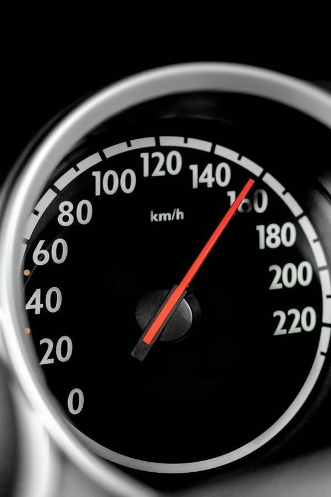
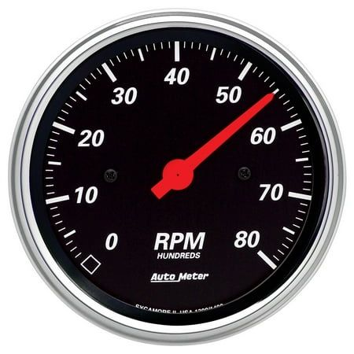
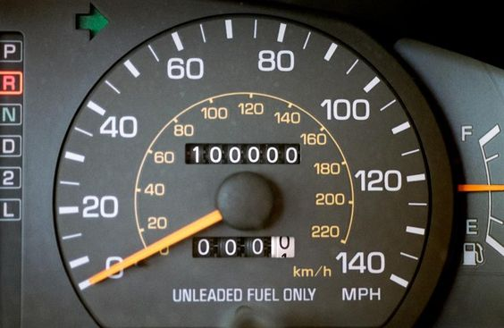

DASHBOARD INSTRUMENT CLUSTER
A dashboard instrument cluster is the panel of gauges and indicators located directly behind the steering wheel of a vehicle. It provides essential information to the driver about the vehicle's speed, engine RPM (revolutions per minute), fuel level, temperature, and various other parameters depending on the vehicle's make and model. Modern instrument clusters often incorporate digital displays alongside traditional analog gauges, offering features like navigation directions, multimedia controls, vehicle diagnostics, and more. This cluster serves as a vital interface between the driver and the vehicle's operating status, helping ensure safe and efficient driving
TYPES INSTRUMENT CLUSTER
1. Speedometer: The speedometer is a crucial component of the dashboard instrument cluster in a vehicle. It displays the current speed at which the vehicle is traveling, typically measured in miles per hour (mph) or kilometers per hour (km/h). The speedometer helps the driver maintain safe speeds while driving and adhere to speed limits. It's usually represented by a circular gauge with a needle pointing to the current speed on a numbered scale. In modern vehicles, the speedometer may be analog or digital, and it may include additional features such as trip meters, average speed calculation, and speed warnings. 
2. Tachometer:
The tachometer is another important gauge found in the dashboard instrument cluster of a vehicle. Unlike the speedometer, which measures the vehicle's speed, the tachometer measures the engine's speed in revolutions per minute (RPM). It indicates how fast the engine's crankshaft is rotating, which is essential for the driver to manage engine performance and shift gears effectively, especially in manual transmission vehicles.
The tachometer is particularly useful for ensuring that the engine operates within its optimal RPM range, which varies depending on factors such as engine design, load, and driving conditions. For instance, shifting gears too early or too late in a manual transmission vehicle can lead to inefficient fuel consumption or engine strain. In automatic transmission vehicles, the tachometer provides valuable information about engine performance and can alert the driver to potential issues such as engine misfires or overheating.
The tachometer is typically represented by a circular gauge with a needle that moves around a numbered scale, indicating the engine's RPM. In modern vehicles, the tachometer may be analog or digital, and it may include additional features such as shift lights to indicate optimal shift points or warnings for excessive engine RPM.

3. Fuel gauge:
The fuel gauge is a vital component of the dashboard instrument cluster in a vehicle, providing the driver with information about the amount of fuel remaining in the fuel tank. It helps drivers monitor their fuel levels and plan refueling stops accordingly, preventing the vehicle from running out of fuel unexpectedly.
The fuel gauge typically consists of a gauge or display with markings indicating the level of fuel remaining in the tank, often represented by empty, quarter, half, three-quarters, and full indicators. In analog gauges, a needle moves across the scale to indicate the current fuel level, while digital displays may show a numerical value or a graphical representation.

Modern fuel gauges may also include additional features such as a low fuel warning light or message, which alerts the driver when the fuel level drops below a certain threshold. Some vehicles may also incorporate features like estimated remaining range, which calculates the approximate distance the vehicle can travel based on the current fuel level and fuel consumption rate.
Overall, the fuel gauge is essential for helping drivers manage their fuel consumption effectively and ensuring they have enough fuel for their journey.
4. Temperature gauge:
The temperature gauge is a key component of the dashboard instrument cluster in a vehicle, providing information about the temperature of the engine coolant. It helps drivers monitor the operating temperature of the engine and prevents overheating, which can lead to engine damage and breakdowns.
The temperature gauge typically consists of a gauge or display with markings indicating the temperature range, often represented by cold, normal, and hot indicators. In analog gauges, a needle moves across the scale to indicate the current coolant temperature, while digital displays may show a numerical value or a graphical representation.

When the engine is cold, the needle or display will be in the lower range of the gauge. As the engine warms up during operation, the temperature will rise and the needle or display will move towards the normal range. If the engine starts to overheat due to factors such as a malfunctioning cooling system or excessive load, the temperature gauge will indicate a higher temperature, alerting the driver to take action such as pulling over and allowing the engine to cool down or seeking assistance.
Modern vehicles may also include additional features such as warning lights or messages to alert the driver if the engine temperature exceeds safe limits. Monitoring the temperature gauge is essential for ensuring the proper functioning and longevity of the engine.
5. Odometer: The odometer is an essential component of the dashboard instrument cluster in a vehicle, providing the driver with a cumulative measure of the total distance traveled by the vehicle since it was first put into use. It's a crucial tool for monitoring vehicle usage, tracking maintenance schedules, and assessing resale value. 
The odometer typically consists of a numerical display showing the total mileage traveled by the vehicle, often represented in miles or kilometers. In older vehicles, odometers were purely mechanical and displayed the mileage on a set of rotating digits. However, modern vehicles often feature digital odometers, which provide greater accuracy and reliability.
In addition to the standard odometer, many vehicles also include a trip odometer, which allows drivers to track the distance traveled during specific trips or periods. Trip odometers can be reset by the driver, enabling them to monitor distances for particular journeys, such as daily commutes or road trips, without affecting the overall mileage recorded by the main odometer.
Overall, the odometer is a crucial tool for both drivers and vehicle owners, providing valuable information about vehicle usage and helping ensure proper maintenance and care. It also plays a significant role in determining the resale value of a vehicle, as lower mileage is often associated with better condition and reliability.
6. Trip computer:
A trip computer, also known as a trip information display or trip meter, is a feature found in many modern vehicles that provides various real-time and trip-specific information to the driver. It's typically integrated into the dashboard instrument cluster or the vehicle's infotainment system.

The trip computer offers a range of functions and data, including:
1. *Trip Distance*: Displays the distance traveled since the trip computer was last reset. This can be useful for monitoring mileage during a specific journey or for tracking fuel efficiency over short distances.
2. *Average Fuel Consumption*: Calculates and displays the average fuel consumption for the current trip. This information helps drivers gauge their fuel efficiency and adjust their driving habits to improve fuel economy.
3. *Instantaneous Fuel Consumption*: Shows the current rate of fuel consumption in real-time, allowing drivers to see how their driving behavior affects fuel efficiency. For example, accelerating aggressively may result in higher fuel consumption.
4. *Estimated Range*: Estimates the distance the vehicle can travel based on the current fuel level and fuel consumption rate. This helps drivers plan refueling stops and ensures they don't run out of fuel during their journey.
5. *Average Speed*: Calculates and displays the average speed for the current trip, giving drivers insight into their driving habits and adherence to speed limits.
6. *Elapsed Time*: Shows the duration of the current trip, helping drivers track travel time and plan their schedules accordingly.
7. *Outside Temperature*: Displays the current ambient temperature outside the vehicle, which can be useful for determining weather conditions and adjusting driving behavior accordingly.
8. *Vehicle Settings*: Some trip computers allow drivers to customize settings such as units of measurement (miles or kilometers), language preferences, and display configurations.
The trip computer enhances the driving experience by providing valuable information that helps drivers make informed decisions about their journey, optimize fuel efficiency, and monitor vehicle performance. It's a convenient feature that contributes to safer, more efficient, and enjoyable driving.
IMPORTANT INFO OF DASHBOARD INSTRUMENT CLUSTER
*Purpose* The instrument cluster serves as the primary interface between the driver and the vehicle's essential information, including speed, engine RPM, fuel level, temperature, and warning indicators.
*Components* Typical components of an instrument cluster include a speedometer, tachometer, fuel gauge, temperature gauge, odometer, warning lights, and sometimes additional displays for trip information or vehicle settings.
*Analog vs Digital*: Instrument clusters can feature analog gauges with physical needles and dials or digital displays with numerical readouts and graphical representations. Many modern vehicles incorporate a combination of analog and digital elements for a balance of traditional and contemporary design.
*Integrated Displays*: Some instrument clusters include integrated displays for features such as navigation directions, multimedia controls, vehicle diagnostics, and driver assistance information
*Driver Information System*: Advanced instrument clusters may include a driver information system or trip computer that provides real-time data on fuel consumption, trip distance, average speed, and more.
*Warning Indicators*: Instrument clusters feature warning lights or symbols to alert the driver to potential issues such as low fuel, engine problems, tire pressure abnormalities, and other vehicle malfunctions. These warnings help ensure safe operation and prompt maintenance.
*Customization*: Some instrument clusters allow for customization of display settings, such as adjusting brightness, choosing between different display themes, or configuring which information is prioritized on the screen.
*Integration with Vehicle Systems*: The instrument cluster is often integrated with various vehicle systems, such as the engine control unit (ECU), transmission control module (TCM), and body control module (BCM), to receive and display real-time data about the vehicle's status and performance.
Overall, the instrument cluster is a critical component of the vehicle's interior, providing essential information to the driver for safe and efficient operation. Advances in technology continue to enhance the functionality and versatility of instrument clusters, offering drivers more features and customization options than ever before